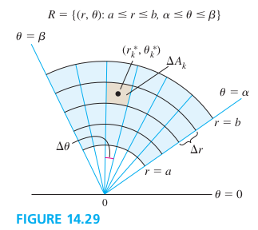
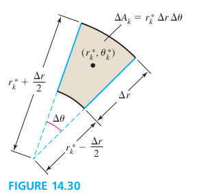
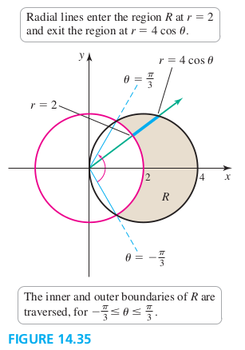

Section 14.3 Double Integrals in Polar Coordinates
Polar Rectangular Regions


Figure 14.30 shows the kth rectangular, with area of ΔAk. The point (rk∗,θk∗) is chosen so that the outer arc of the polar rectangle has radius rk∗+Δr/2, and the inner arc has the radius rk∗−Δr/2. The area of the polar rectangle is
ΔAk=(area of outer sector)−(area of inner sector)=21(rk∗+2Δr)2Δθ−21(rk∗−2Δr)2Δθ=rk∗ΔrΔθ
Double Integrals over Polar Rectangular Regions
Let f be continuous on the region in the xy-plane R={(r,θ):0⩽a⩽r⩽b,α⩽θ⩽β}, where β−α⩽2π. Then
R∬f(r,θ)dA=∫αβ∫abf(r,θ)rdrdθ
EXAMPLE 1 Volumes of a paraboloid-cap
Find the volume of the solid bounded by the paraboloid z=9−x2−y2 and the xy-plane.
Solution
V=∫02π∫03(9−r2)rdrdθ=281π
EXAMPLE 2 Region bounded by two surfaces
Find the volume of the region bounded by the paraboloids z=x2+y2 and z=8−x2−y2. This problem was solved in rectangular coordinates in Example 5 of Section 14.2.
Find the volume of the region beneath the surface z=xy+10 and above the annular region R={(r,θ):0⩽r⩽2,0⩽θ⩽2π}. (An annulus is the region between two concentric circles.)
Write an iterated integral for R∬f(r,θ)dA for the following regions R in the xy-plane.
a. The region outside the circle r=2 (with radius 2 centered at (0, 0)) and inside the circle r=4cosθ (with radius 2 centered at (2, 0))
b. The region inside both circle of part (a)

Solution
a. Equating the two expression for r.
R∬f(r,θ)dA=∫−π/3π/3∫24cosθf(r,θ)rdrdθ
b. The region R consists of three subregion R1,R2, and R3
The region of the area R={(r,θ):0⩽g(θ)⩽r⩽h(θ),α⩽θ⩽β}, where 0<β−α⩽2π, is
A=R∬dA=∫αβ∫g(θ)h(θ)rdrdθ
EXAMPLE 5 Area within a lemniscate
Compute the area of the region in the first and fourth quadrants outside the circle r=2 and inside the lemniscate r2=4cos2θ.
Solution
A=∫−π/6π/6∫22cos2θrdrdθ=3−3π
Average Value over a Planar Polar Region
To find the average value of a function over a region in polar coordinates, we again integrate the function over ther egion and divided by the area of the region.
EXAMPLE 6 Average y-coordinate
Find the average value of the y-coordinates of the points in the semicircular disk of radius a given by R={(r,θ):0⩽r⩽a,0⩽θ⩽π}.